Babylist · 2023
Built an interactive checklist feature to answer registrants' most common question: what do I actually need, and what am I missing?
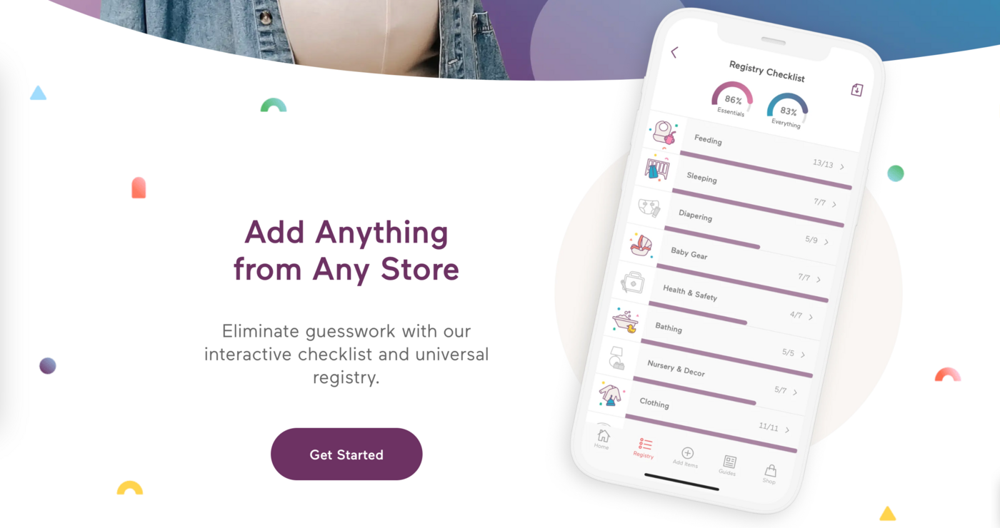
1
Problem
Who are we solving for? Registrants, especially new sign-ups.
What is their problem? Users don't know what they need on their baby registry. And they want to know what they actually need versus the nice-to-haves.
Users had to look for these answers outside of Babylist.
How do we know this is the problem? UXR of first-time users
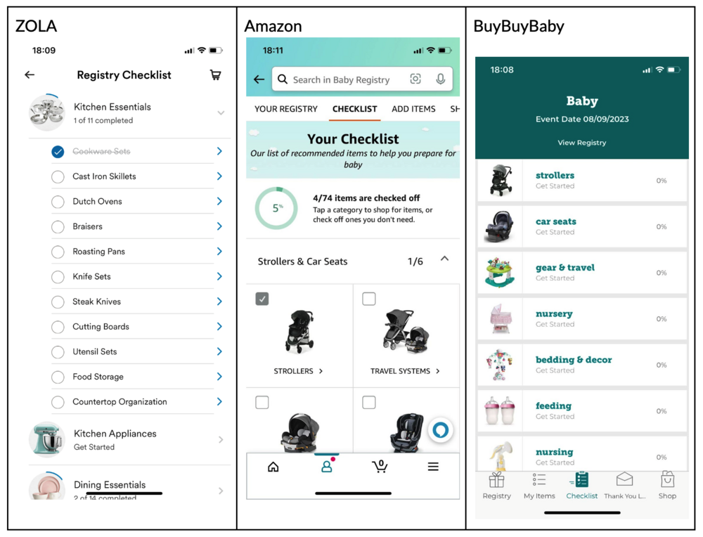
2
Proposed Solution
A dedicated Checklist page that lists themes and product categories.
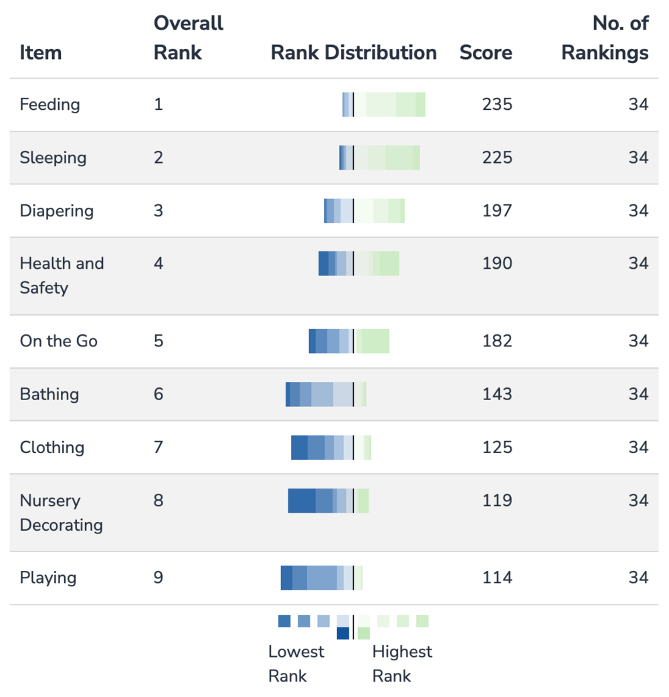
3
Deciding the Taxonomy
I drafted the themes (e.g. "Sleeping," "Feeding") and, looking at competitors and collaborating with our Parent Slack channel, listed the product categories for each theme.
To determine the order themes would appear in, we ran a card sorting exercise with 34 recent parents.
Babylist is a "universal registry" — its key value proposition is the ability to add anything from any store.
It was a P0 requirement for me that the checklist auto-check off the relevant category, which meant our system needed to categorize every product.
To provide training data, I dogfooded it myself: creating a registry, organizing it by our defined categories, and adding 20–60 items per category from various retail sites.
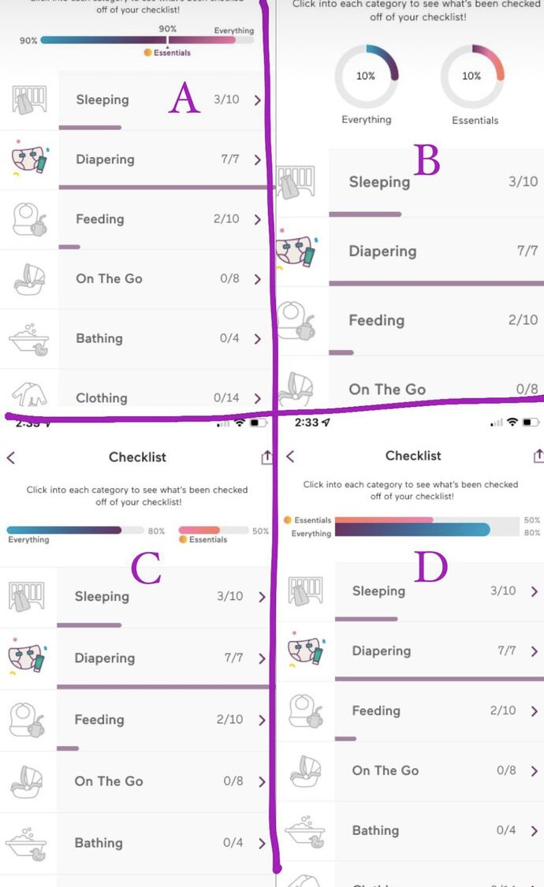
4
Design Iterations
God bless designers. Here are a few sound bites of my feedback:
5
Checklist Goes Live
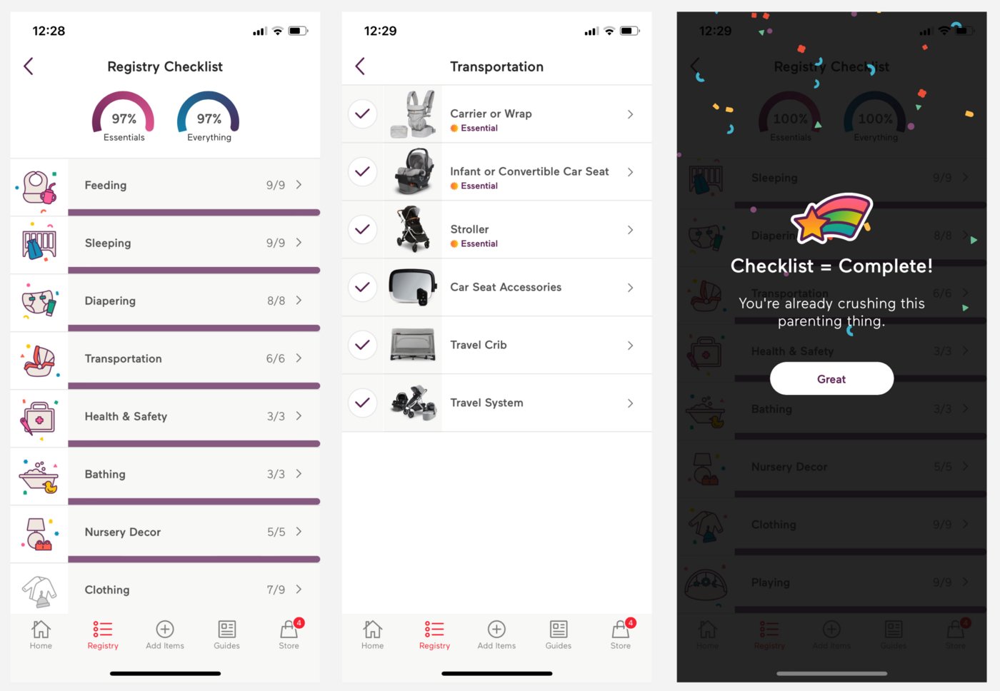
Adding a crib from Amazon, then watching the crib category check off and the progress bar update.
6
But We Had a Problem
People weren't discovering the checklist.
Despite having 3 entry points within the app, during our A/B test only 1 in 4 users in the test group viewed it. Still, that 25% drove a 127 basis point increase in users with 2+ sessions in their first 5 days.
We needed users to discover this feature, so we put an entry point front and center on the home feed of the app — the purple half-bar below.
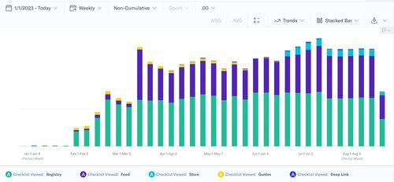
7
Results
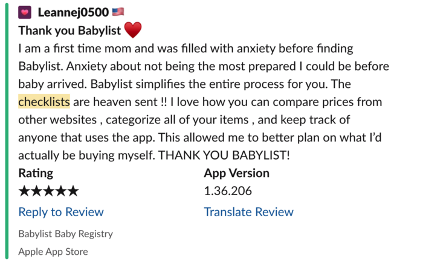
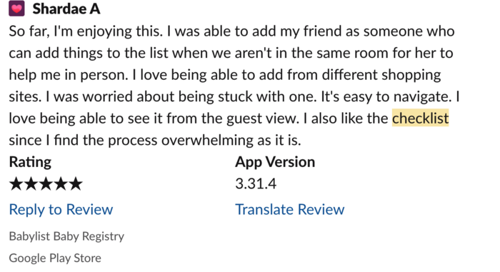
8
Maximizing the Success
I proposed an SEO landing page that incorporated the actual interactive checklist we'd built for logged-in web users.
This was Growth team territory, and their roadmap was already committed — so I approached the lead Growth PM and offered 3 weeks of my own roadmap and 2 engineers from my team if she'd take on the project.
The new Checklist landing page became the #1 organic search result for "baby registry checklist."
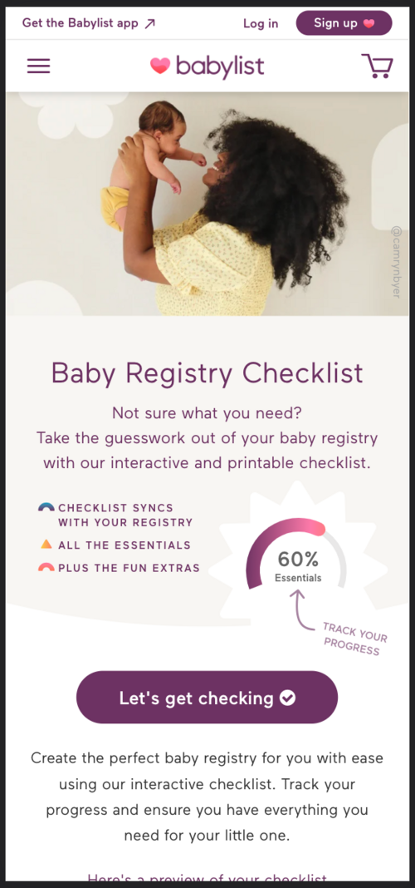
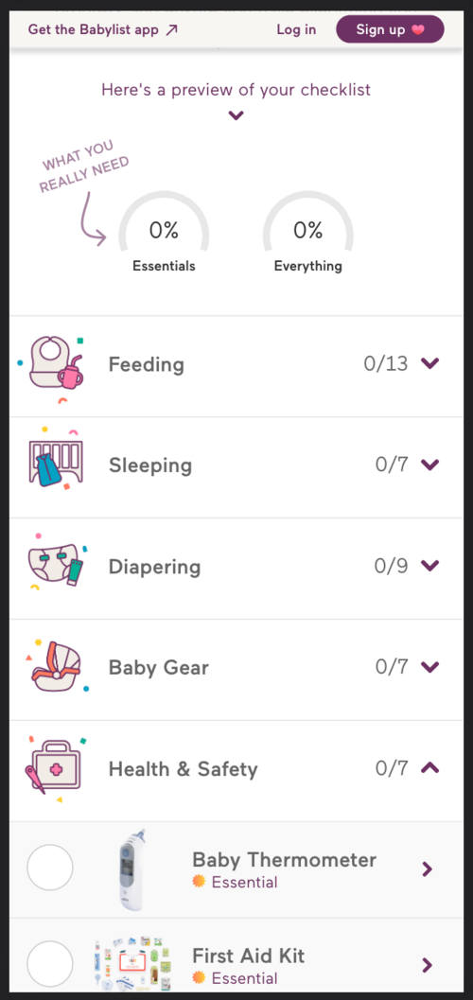
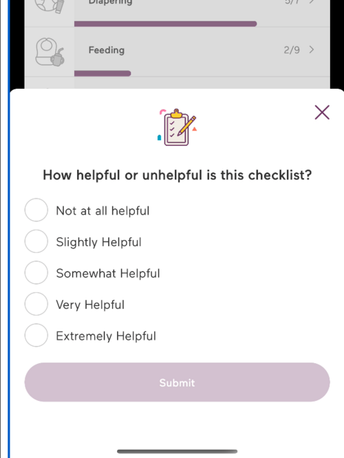
9
Bonus
Historically the product org hadn't gathered feature-level qualitative data at scale — we typically took a small qualitative sample size.
During the A/B test, my qualitative success metric was that at least 75% of users cited the checklist as "extremely useful" or "very useful."
To get there, I introduced a new, reusable Feedback Modal for our iOS app that any PM could leverage.
The component only required a surface area, the trigger logic, and one question to ask — event tracking was automatically hooked up!